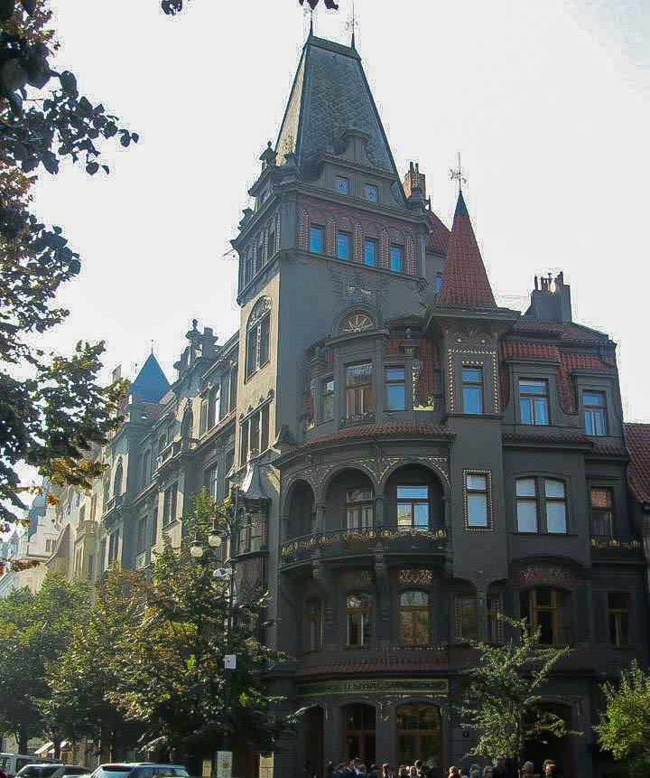
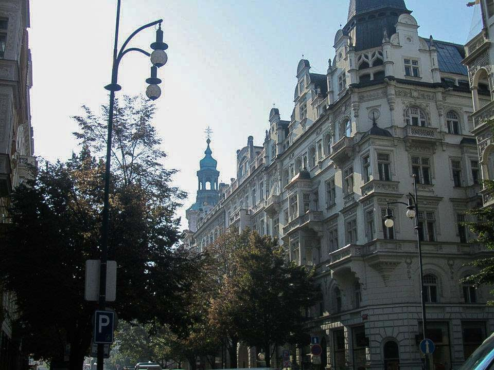

Journey Through Prague: Your Comprehensive Travel Guide

Introduction
Prague, the capital of the Czech Republic, is a city where history and modernity coexist in perfect harmony. Known as the "City of a Hundred Spires," Prague boasts stunning architecture, rich cultural heritage, and vibrant nightlife. Whether you're an art enthusiast, history buff, or simply seeking a charming European getaway, Prague offers an unforgettable experience.
History
Prague's history spans over a thousand years, serving as a significant cultural, economic, and political center in Central Europe. From its medieval origins to its pivotal role in the Austro-Hungarian Empire and the Velvet Revolution, Prague has been at the heart of major historical events. The city's architectural landscape reflects its diverse history, with influences from Gothic, Renaissance, Baroque, and Art Nouveau styles.
How to Get There
Prague is well-connected to various parts of Europe and the world, making it an accessible destination for travelers. Here are the primary ways to reach Prague:
- By Air: Václav Havel Airport Prague (PRG) is the main international gateway, serving numerous global destinations. From the airport, you can take the Airport Express (AE) train, buses, taxis, or private transfers to reach the city center.
- By Train: Prague is a central hub in Europe's extensive rail network. High-speed trains connect Prague to major cities like Berlin, Vienna, Budapest, and Munich. The main railway station is Praha hlavní nádraží (Prague Main Station).
- By Bus: Long-distance buses operated by companies like FlixBus and RegioJet offer affordable travel options to Prague from various European cities, including Berlin, Vienna, and Kraków.
- By Car: Renting a car provides flexibility, allowing you to explore the Czech countryside and neighboring countries at your own pace. Prague is accessible via major highways from cities like Dresden, Vienna, and Bratislava.
- By Ferry: While less common, ferries connect Prague to nearby countries via the Vltava River, primarily for leisure cruises rather than direct transportation.
Top Attractions in Prague
1. Old Town Square and Astronomical Clock
The Old Town Square is the heart of Prague, surrounded by colorful baroque buildings, Gothic churches, and historical monuments. The Astronomical Clock (Orloj) is a must-see attraction, featuring a fascinating mechanical display that comes to life every hour, attracting crowds with its intricate craftsmanship.

2. Charles Bridge
Spanning the Vltava River, the Charles Bridge is one of Prague's most iconic landmarks. Lined with 30 Baroque statues, the bridge offers stunning views of the city's skyline, including Prague Castle and the National Theatre. It's a popular spot for artists, musicians, and street performers.

3. Prague Castle
Perched atop a hill, Prague Castle is the largest ancient castle complex in the world. It encompasses palaces, churches, gardens, and fortifications, serving as the official residence of the Czech President. Highlights include St. Vitus Cathedral, the Old Royal Palace, and Golden Lane.

4. St. Vitus Cathedral
Located within Prague Castle, St. Vitus Cathedral is a masterpiece of Gothic architecture. Its soaring spires, intricate stained glass windows, and stunning interiors make it a must-visit site. The cathedral also houses the tombs of Czech kings and saints.

5. Beautiful Architecture
Prague is renowned for its diverse architectural styles. From the Gothic spires of the Powder Tower to the Art Nouveau façade of the Municipal House, the city's buildings are a testament to its rich cultural heritage. Don't miss the iconic Dancing House, a modern architectural marvel.
6. Beautiful Building
The National Theatre is a stunning example of Neo-Renaissance architecture and a cultural landmark in Prague. It hosts opera, ballet, and drama performances, and its grand façade and opulent interiors are worth exploring even outside of performance times.
Tips and Recommendations
Do’s and Don’ts
- Do: Wear comfortable walking shoes, as Prague involves a lot of walking on cobblestone streets.
- Don’t: Miss the opportunity to explore Prague’s lesser-known neighborhoods like Vyšehrad and Žižkov for a more authentic experience.
- Do: Bring a map or use a reliable navigation app to help you navigate the city's maze-like streets.
- Don’t: Leave your belongings unattended, especially in crowded areas like Old Town Square and public transportation.
- Do: Take advantage of Prague’s excellent public transportation system, including trams, buses, and the metro, to get around efficiently.
- Don’t: Engage in loud or disruptive behavior in public places, respecting the local customs and tranquility.
Packing List
- Comfortable walking shoes.
- Weather-appropriate clothing (layers for spring/fall, warm clothes for winter).
- Reusable water bottle to stay hydrated while exploring.
- A backpack for carrying snacks and essentials.
- A map or guidebook to navigate Prague’s historic attractions.
- Insect repellent and personal hygiene items.
- Portable charger for your electronic devices.
- Light jacket or sweater for cooler evenings.
- Umbrella or raincoat for unexpected weather changes.
- Basic Czech phrases to enhance your interactions with locals.
Costs
- Entry Fees: Most major attractions and museums charge an entrance fee (e.g., €14 for Prague Castle).
- Transportation: A 24-hour public transport ticket costs around €4.50 and covers trams, buses, and the metro.
- Food: Meals at local restaurants range from €10-25 per person, depending on the establishment.
- Accommodation: Prices vary widely based on location and quality, from budget hostels at €15 per night to luxury hotels exceeding €150 per night.
Currency and Money Matters
The official currency in Prague, as in the rest of the Czech Republic, is the Czech Koruna (CZK). Here's what you need to know about managing your finances during your trip:
Currency Exchange
Currency exchange services are widely available in Prague, including at the airport, banks, and authorized exchange counters. It's advisable to exchange a small amount of money upon arrival for immediate expenses.
ATMs and Banking
ATMs are readily accessible throughout the city, especially in major districts and tourist areas. Most ATMs accept international debit and credit cards. However, it's a good practice to inform your bank of your travel plans to avoid any issues with card usage abroad.
Credit Cards
Credit cards (Visa and Mastercard) are widely accepted in hotels, restaurants, and larger shops. However, smaller establishments and street vendors may prefer cash, so it's recommended to carry some Czech Koruna for such situations.
Tips
Tipping in Prague is appreciated but not mandatory. A tip of 5-10% is common for good service in restaurants, while rounding up the bill is sufficient for cafes and casual dining.
Practical Information
Best Time to Visit
The optimal times to visit Prague are during the spring (April to June) and fall (September to October). During these periods, the weather is mild, and the tourist crowds are more manageable compared to the peak summer months. Springtime brings blooming flowers and pleasant temperatures, while autumn offers crisp air and colorful foliage.
Getting There
Prague is well-connected by air, rail, and road:
- By Air: Václav Havel Airport Prague (PRG) is the main international gateway, serving numerous global destinations. From the airport, you can take the Airport Express (AE) train, buses, taxis, or private transfers to reach the city center.
- By Train: Prague is a central hub in Europe's extensive rail network. High-speed trains connect Prague to major cities like Berlin, Vienna, Budapest, and Munich. The main railway station is Praha hlavní nádraží (Prague Main Station).
- By Car: Renting a car provides flexibility, allowing you to explore the Czech countryside and neighboring countries at your own pace. Prague is accessible via major highways from cities like Dresden, Vienna, and Bratislava.
- By Bus: Long-distance buses operated by companies like FlixBus and RegioJet offer affordable travel options to Prague from various European cities, including Berlin, Vienna, and Kraków.
- By Ferry: While less common, ferries connect Prague to nearby countries via the Vltava River, primarily for leisure cruises rather than direct transportation.
Language
The official language is Czech. While English is commonly spoken in tourist areas, learning a few basic Czech phrases can enhance your interactions with locals and enrich your travel experience.
Health and Safety
Prague is generally safe for travelers, but it's important to take standard precautions:
- Stay hydrated and protect yourself from the sun, especially during summer months.
- Be cautious with your belongings, particularly in crowded areas and on public transport.
- Use reputable tour operators and guides for activities and excursions.
- Ensure you have appropriate travel insurance covering health and activities.
Cultural Immersion
Immerse yourself in Prague’s rich culture through various local traditions and activities:
- Palace Tours: Explore the grandeur of Prague’s numerous palaces and historical buildings, each with its unique architectural style and historical significance.
- Local Markets: Visit markets like the Havelské tržiště (Havel’s Market) and Naplavka Farmers' Market to experience the local cuisine, crafts, and vibrant community life.
- Art and Music: Attend performances at local theaters and concert halls, or visit art galleries showcasing regional artists.
- Festivals: Participate in events such as the Prague Spring International Music Festival or the Signal Festival to experience local festivities and cultural celebrations.
- Historical Workshops: Engage in workshops that delve into Prague’s history, architecture, and cultural heritage, offering a deeper understanding of the city's legacy.
- Boat Tours: Take a boat tour along the Vltava River to enjoy scenic views of Prague’s landscapes and landmarks from the water.
Food and Cuisine
Prague offers a delightful mix of traditional Czech cuisine and modern culinary innovations. Here are some must-try dishes and dining experiences:
- Goulash (Guláš): A hearty stew made with beef, onions, and paprika, typically served with bread dumplings.
- Trdelník: A sweet pastry rolled in sugar and nuts, often filled with ice cream or other sweet fillings.
- Svíčková na smetaně: Marinated beef sirloin served with a creamy vegetable sauce, cranberry sauce, and bread dumplings.
- Koláče: Traditional Czech pastries filled with fruit, cheese, or poppy seeds.
- Pilsner Urquell: Enjoy the famous Czech beer at one of Prague’s many historic beer halls and pubs.
- Local Wines: Savor a variety of Czech wines, including Moravian whites, available at numerous wine bars and restaurants.
- Traditional Pubs (Hospoda): Experience authentic Czech hospitality and cuisine at traditional pubs, where you can enjoy live music and local dishes.
- Fine Dining: For a more upscale experience, visit Prague’s gourmet restaurants offering innovative dishes and exquisite wines.
- Street Food: Taste authentic Czech street food like smažený sýr (fried cheese) and langoš from local vendors.
- Cooking Classes: Participate in Czech cooking classes to learn how to prepare traditional dishes, offering a hands-on cultural experience.
I highly recommend dining at local restaurants and cafes to savor authentic Prague flavors and enjoy the city's lively atmosphere.
Adventure and Activities
Prague offers a wide range of activities for adventure enthusiasts and nature lovers:
- Boat Tours: Explore the scenic waterways of the Vltava River on a guided boat tour, offering unique perspectives of Prague’s landscapes and maritime beauty.
- Hiking and Biking: Discover Prague’s natural beauty through its extensive network of hiking and biking trails in areas like Petřín Hill and Divoká Šárka.
- Segway Tours: Navigate the city’s landmarks and parks effortlessly on a guided Segway tour, providing a fun and efficient way to explore Prague.
- Horseback Riding: Enjoy horseback riding excursions through Prague’s picturesque landscapes and forested areas, offering a tranquil escape from the urban bustle.
- Kayaking and Canoeing: Paddle along Prague’s waterways, exploring hidden coves and enjoying the tranquility of the water.
- Photography Tours: Capture stunning photographs of Prague’s architecture, gardens, and natural scenery on a specialized photography tour, perfect for both amateur and professional photographers.
- Escape Rooms: Challenge yourself with interactive escape room experiences that test your problem-solving skills and provide a fun group activity.
- Live Music and Theatre: Attend live performances at local venues, ranging from classical concerts at the National Theatre to contemporary theatre productions at the Laterna Magika.
- Cooking Classes: Participate in Czech cooking classes to learn how to prepare traditional dishes, offering a hands-on cultural experience.
- Historical Walks: Join guided historical walks to explore Prague’s rich heritage, including tours of the Jewish Quarter and medieval Prague.
One of the most exhilarating activities is taking a twilight boat tour on the Vltava River, offering breathtaking views of Prague’s illuminated landmarks and a magical perspective of the city’s beauty.
About Prague
Prague, the capital city of the Czech Republic, is renowned for its historical significance, architectural grandeur, and vibrant cultural scene. Situated in the heart of Europe, Prague serves as a political, economic, and cultural hub, blending ancient heritage with modern dynamism.
The city is famously home to the Charles Bridge, the largest ancient bridge in Europe, and Prague Castle, the largest castle complex in the world. Prague’s Old Town (Staré Město) is a UNESCO World Heritage Site, featuring a stunning array of Gothic, Renaissance, and Baroque architecture, including the iconic Astronomical Clock and the Church of Our Lady before Týn.
Prague also embraces contemporary art and culture, with numerous museums, galleries, theaters, and cultural institutions contributing to its rich artistic landscape. The National Museum, the National Gallery, and the Estates Theatre are just a few examples of Prague's commitment to preserving and showcasing its cultural heritage.
Additionally, Prague serves as a gateway to the Czech countryside and the stunning Bohemian and Moravian landscapes, providing travelers with opportunities for day trips, outdoor activities, and countryside excursions. The city's blend of ancient history, vibrant culture, and modern amenities makes Prague an ideal destination for travelers seeking a comprehensive and enriching experience.
Whether you're exploring its iconic landmarks, enjoying its culinary delights, or immersing yourself in its lively atmosphere, Prague offers something for every visitor, ensuring an unforgettable journey through one of Europe’s most enchanting cities.